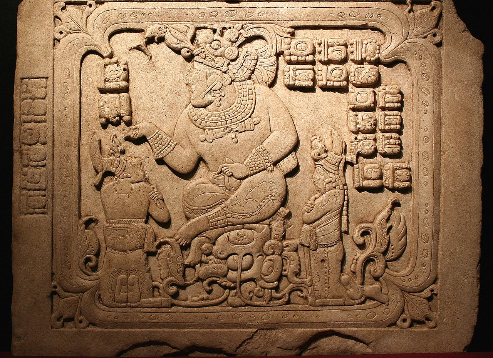
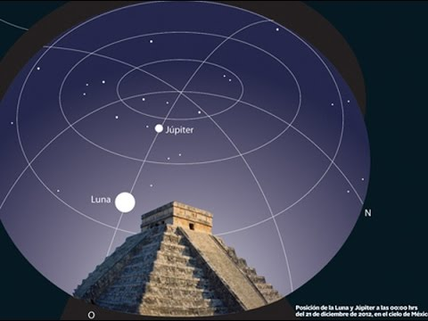

Los mayas vivían en muchos lugares como México, Guatemala, Belice, Honduras y El Salvador. La tierra donde estaban era mayormente plana, con pocos montes y colinas. Había una costa baja cerca también.
Sabías que ...
La cultura maya fue una civilización antigua en América que vivió en lugares como Guatemala, México, Belice, Honduras y El Salvador. Eran muy buenos en muchas cosas como escribir, arte, construir edificios, creer en dioses y contar números. También sabían mucho sobre las estrellas y los números. Estuvieron por más de dos mil años y ocuparon un montón de tierra, más de 300,000 kilómetros cuadrados. Como eran agricultores, formaron pueblos sedentarios. Sembraban maíz, frijoles, calabazas y otros vegetales en sus campos. También cultivaban frutas como el aguacate y el cacao. Eran muy buenos en la agricultura y tenían técnicas avanzadas para trabajar la tierra.
Escritura
Los mayas eran súper buenos en muchas cosas. Sabían escribir con jeroglíficos, como dibujitos que significaban palabras.
Arte y arquitectura
También eran artistas geniales, hacían esculturas y pinturas muy bonitas. Construían templos y ciudades increíbles, con pirámides altísimas.
Religión
Creían en dioses y tenían historias muy interesantes sobre ellos.
Ciencias
En matemáticas eran muy avanzados, tenían un sistema de números con ceros y todo. Y en astronomía, sabían mucho sobre las estrellas y el calendario. Los mayas eran muy inteligentes y hacían muchas cosas asombrosas hace mucho tiempo.
En resumen
Ubicación geográfica
Mapa interactivo
Códice de París
Páginas del Códice de París, que data del periodo Posclásico, uno de los pocos libros mayas que se conservan.
Panel 3 de Cancuén

Panel 3 de Cancuén, mostrando al Rey T'ah 'ak' Cha'an.
Dintel 3
Dintel 3 del Templo de la Serpiente Bicéfala, Tikal, hecho de madera ricamente tallada. Representa la celebración de una victoria militar de Yik'in Chan K'awiil en 743.
Chichén Itzá

Chichén Itzá, en México en 1988 declarado por la UNESCO como Patrimonio de la Humanidad. Formada por una pirámide escalonada con frontones esculpidos que representan escenas mitológicas.
Chichén Itzá
Chichén Itzá, en México en 1988 declarado por la UNESCO como Patrimonio de la Humanidad. Formada por una pirámide escalonada con frontones esculpidos que representan escenas mitológicas.
Los siete dioses creadores
- Alom - La Diosa pobladora. Concebía a los hijos junto a Qaholom, quien los engendraba.
- Bitol - Dios del cielo. Entre los dioses creadores, fue el que dio forma a las cosas. Participó en los dos últimos intentos de crear la humanidad.
- Kukulkán
- Hurakán
- Qaholom - El dios padre que engendra los hijos.
- Tepeu
- Tzacol - Dios del cielo.
Números
Los mayas tenían un sistema de contar números que usaban rayitas y puntitos, y lo llamaban sistema vigesimal porque contaban hasta veinte. Empezaron a usarlo hace mucho tiempo, alrededor del año 1000 antes de Cristo. Los mayas también inventaron el símbolo para el cero, que fue una idea muy importante. Fue uno de los primeros lugares donde se usó el cero en el mundo. Lo usaban para escribir fechas y también para hacer cálculos matemáticos. Los números mayas estuvieron en sus escritos durante más de mil años hasta que los españoles llegaron y cambiaron muchas cosas.
Astronomía

Los mayas miraban muy cuidadosamente el cielo para ver el Sol, la Luna, Venus y las estrellas. No era solo por curiosidad, sino que usaban esa información para adivinar cosas, como si iban a tener buena suerte o no. Los sacerdotes mayas eran los que más sabían de esto y lo usaban para hacer profecías sobre lo que iba a pasar en el futuro. Ellos anotaban cuando pasaban cosas como eclipses del Sol y la Luna, y usaban palitos cruzados para ver mejor el cielo. Los mayas eran tan buenos que tenían calendarios y tablas de eclipses que eran más precisos que los de los europeos en esa época.
Calendario
Los mayas tenían un calendario que era muy importante para ellos. Empezaron a desarrollarlo hace mucho tiempo, antes de que llegaran los europeos. Eran muy buenos en calcular los ciclos del Sol, la Luna y los planetas. A veces eran más precisos que los calendarios de Europa. El calendario tenía tres partes principales: el tzolk'in que duraba 260 días, el haab' que duraba 365 días y la rueda de 52 años que combinaba los dos anteriores. También tenían otros ciclos más cortos, como uno de 819 días que tenía que ver con sus creencias religiosas. Para los mayas, el calendario no solo era para marcar los días, sino que estaba muy ligado a sus rituales y prácticas religiosas importantes.
Los antiguos mayas fueron una gente asombrosa que vivió en lugares como México, Guatemala y Honduras hace muchísimos años. Ellos eran expertos en muchas cosas que hoy en día nos hacen decir "¡wow!". Por ejemplo, tenían una escritura muy especial con jeroglíficos que usaban para contar sus historias y pensamientos.
Pero eso no es todo, ¡también eran artistas increíbles! Sus esculturas y pinturas son tan bonitas que todavía nos dejan boquiabiertos. Y cuando se trataba de construir, ¡ni se diga! Ellos levantaron ciudades enteras con pirámides altísimas que son famosas en todo el mundo.
Además de ser buenos en arte y construcción, los mayas eran superinteligentes en la agricultura. Cultivaban maíz, frijoles, calabazas y muchas otras plantas que les daban comida para vivir. Pero también cazaban animales como venados y aves para complementar su dieta.
Y algo que los hace aún más especiales es que sabían mucho sobre el cielo y las estrellas. Observaban el Sol, la Luna y los planetas con mucha atención, y usaban esa información para saber cuándo sembrar y cosechar. También tenían calendarios muy precisos que usaban en sus ceremonias y rituales importantes.
Los mayas fueron una civilización súper talentosa y avanzada que dejó un legado maravilloso. Aprendemos mucho de ellos y siempre nos sorprenden con su sabiduría y creatividad.